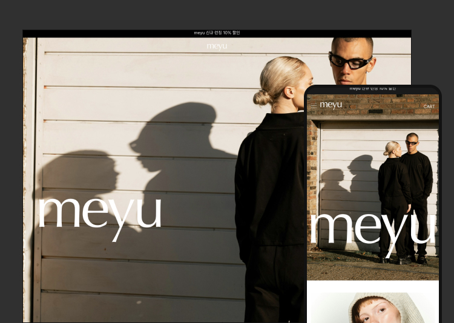

Portfolio

당신의 시작을 디자인하는 파트너
브랜드를 담아내는 맞춤형
웹사이트를 완성해 드립니다.
Our Service
당신의 브랜드, 소비자와 연결되는 순간
당신만의 감성을 담은 디자인으로 브랜드의 매력을 보여줍니다.
사람들의 마음을 여는 이야기로 자연스럽게
다가가고, SEO로 더 많은 이들이 당신을 찾을 수 있게 도와드립니다.
이제 온라인에서 당신만의 색깔을 펼쳐보세요!
UI/UX Design
우리 브랜드에 딱 맞는 웹사이트를 원하세요?
브랜드 가치를 극대화하는 1:1 맞춤형 디자인을 제공합니다.
세련된 UI/UX 설계로 고객 경험 최적화
사용자 중심의 구조 설계로 이탈률 최소화
브랜드 정체성을 반영한 웹 디자인으로 차별화
Development
생각했던 디테일까지 구현되길 원하세요?
기능과 창의성을 더해 완성도 높은 웹사이트를 제작합니다.
커스텀 애니메이션 삽입으로 역동적인 연출
모든 디바이스에 최적화된 반응형 웹사이트
소셜 로그인으로 간편한 사용자 경험 제공
SSL 보안 서버 등록
Copywriting
브랜드가 스스로 이야기하는 웹사이트를 원하세요?
스토리가 담긴 카피로 고객의 마음을 사로잡습니다.
핵심 메시지 전달로 브랜드 매력 극대화
트렌디한 어조와 톤으로 현대적인 감각 반영
SEO 최적화를 고려한 콘텐츠 구성
SEO
더 많은 사람들에게 발견되길 원하세요?
효율적인 SEO 전략으로 검색 엔진 상위 노출을 보장합니다.
맞춤형 키워드 리서치 최적화
메타태그·이미지·구조 설계까지 꼼꼼하게 반영
구글, 네이버 모두 지원
PROJECT PROCESS
PROJECT PROCESS
PROJECT PROCESS
PROJECT PROCESS
PROJECT PROCESS
PROJECT PROCESS
Consultation
상담
이메일 또는 카카오톡을 통한 상담 진행
Quotation & Contract
견적 및 계약
견적 작성 및 계약서 체결
Data & Deposit
자료 및 선금
자료 수집 및 선금 입금
Page Delivery
페이지 발송
메인 1페이지 및 서브 1페이지 발송
Feedback & PC Completion
피드백 및 PC 완료
피드백 반영 및 PC 페이지 완료
Mobile & Final Payment
모바일 및 잔금
모바일 작업 완료 및 잔금 정산
Additional Services
부가 서비스
도메인 연동 SEO 추가 작업
Completion & Maintenance
완료 및 유지보수
발송 및 유지보수 안내
Portfolio